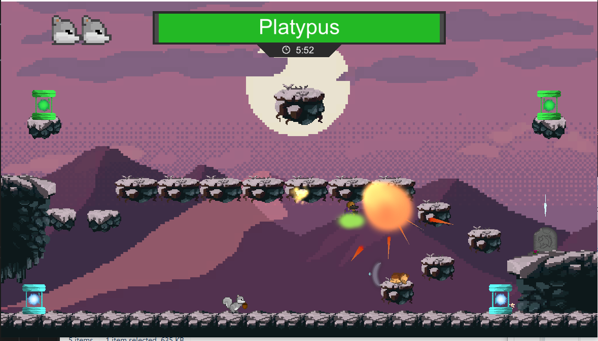
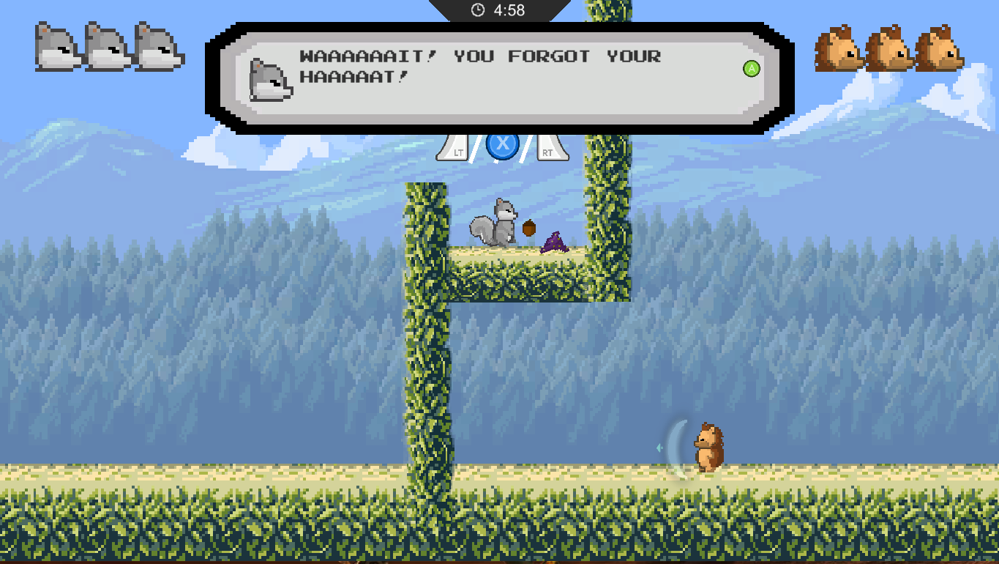

About The Magic Hat
The Magic Hat is a 2D asymmetric two player game where an unlikely duo, a squirrel and a hedgehog, must return a wizard’s hat. The players must combine their unique abilities to overcome obstacles and defeat evil bosses in order to return the hat to its rightful owner.
Development Blog + Download
https://www.indiedb.com/members/nonsense-studios/articles
Download Game Here (Click on Gold builds) Requires 2 Xbox controllers
Development Details
- Final Team Project for Game Development Course
- Development Cycle: 1-2 months (Agile Development)
- Team: Nigel Charleston, Natasha Badami, David Hu, Keaton Bonds, Paul Green
- Engine: Unity
- Programming Language: C#
Role: Gameplay Programmer + Blog Writer
- Found and fixed critical bugs impacting gameplay and UI functionailty, improving the players' experience with the game.
- Implemented a game controller object which manages player progression, as well as a respawning mechanic for reviving dead players.
- Wrote weekly blog posts on the game's development via Indie DB, documenting the team's progress and struggles.
- Helped organize and run play sessions, which were used to solicit feedback on the game from the general public.